소방설비기사(기계분야) (2010-05-09 기출문제)
1과목: 소방원론
1. 강화액에 대한 설명으로 옳은 것은?
- 침투제가 첨가된 물을 말한다.
- 물에 첨가하는 계면 활성제의 총칭이다.
- 물이 고온에서 쉽게 증발하게 하기 위해 첨가한다.
- 알칼리 금속염을 사용한 것이다.
(정답률: 36%)

2. 불꽃의 색상을 저온으로부터 고온 순서로 옳게 나열한 것은?
- 암적색, 휘백색, 황적색
- 휘백색, 암적색, 황적색
- 암적색, 황적색, 휘백색
- 휘백색, 황적색, 암적색
(정답률: 72%)
3. 소화기구의 구분에서 간이소화용구에 해당되지 않는 것은?
- 이산화탄소소화기
- 마른모래
- 팽창질석
- 팽창진주암
(정답률: 73%)
4. 무창층이 개구부로서 갖추어야 할 조건으로 옳은 것은?
- 개구부 크기가 지름 30cm의 원이 내접할 수 있는 것
- 해당 층의 바닥면으로부터 개구부 밑부분까지의 높이가 1.5m 인 것
- 내부 또는 외부에서 쉽게 파괴 또는 개방할 수 있을 것
- 창에 방범을 위하여 40cm 간격으로 창살을 설치한 것
(정답률: 74%)
5. 마그네슘의 화재시 이산화탄소소화약제를 사용하면 안되는 이유는?
- 마그네슘과 이산화탄소가 반응하여 흡열반응을 일으키기 때문이다.
- 마그네슘과 이산화탄소가 반응하여 가연성의 탄소가 생성되기 때문이다.
- 마그네슘이 이산화탄소에 녹기 때문이다.
- 이산화탄소에 의한 질식의 우려가 있기 때문이다.
(정답률: 65%)
6. 이산화탄소 소화약제 고압식 저장용기의 충전비를 옳게 나타낸 것은?
- 1.5 이상 1.9 이하
- 1.1 이상 1.9 이하
- 1.1 이상 1.4 이하
- 1.4 이상 1.5 이하
(정답률: 74%)
7. 청정소화약제 중 HCFC-22가 82%인 것은?
- HCFC BLEND A
- IG-541
- HFC-227ea
- IG-55
(정답률: 60%)
8. 연료로 사용하는 가스에 관한 설명 중 틀린 것은?
- 도시가스, LPG는 모두 공기보다 무겁다.
- 1m3의 CH4를 완전 연소시키는데 필요한 공기량은 약 9.52Nm3이다.
- 메탄의 공기 중 폭발범위는 약 5 ~15% 정도이다.
- 부탄의 공기 중 폭발범위는 약 1.9 ~ 8.5% 정도이다.
(정답률: 66%)
9. 보일오버(Boil over) 현상에 대한 설명으로 옳은 것은?
- 아래층에서 발생한 화재가 위층으로 급격히 옮겨 가는 현상
- 연소유의 표면이 급격히 증발하는 현상
- 탱크 저부의 물이 급격히 증발하여 기름이 탱크 밖으로 화재를 동반하여 방출하는 현상
- 기름이 뜨거운 물 표면 아래에서 끓는 현상
(정답률: 74%)
10. 소방시설의 구분에서 피난설비에 해당하지 않는 것은?
- 무선통신보조설비
- 완강기
- 구조대
- 공기안전매트
(정답률: 74%)
11. 인화점이 낮은 것 부터 높은 순서대로 옳게 나열된 것은?
- 아세톤< 이황화탄소 < 에틸알코올
- 이황화탄소 < 에틸알코올 < 아세톤
- 에틸알코올 < 아세톤 < 이황화탄소
- 이황화탄소 < 아세톤 < 에틸알코올
(정답률: 59%)
12. 감광계수(m-1)에 대한 설명으로 옳은 것은?
- 0.5는 거의 앞이 보이지 않을 정도이다.
- 10은 화재 최성기 때의 농도이다.
- 0.5는 가시거리 20~30m 정도이다.
- 10은 연기감비기가 작동하기 직전의 농도이다.
(정답률: 62%)
13. 소방설비에 사용되는 CO2에 대한 설명으로 틀린 것은?
- 용기 내에 기상으로 저장되어 있다.
- 상온, 상압에서는 기체 상태로 존재한다.
- 공기보다 무겁다.
- 무색, 무취이며 전기적으로 비전도성이다.
(정답률: 64%)
14. 다음 중 인화성 물질이 아닌 것은?
- 기어유
- 질소
- 이황화탄소
- 에테르
(정답률: 67%)
15. 알킬알류미늄 화재시 사용할 수 있는 소화제로 가장 적당한 것은?
- 물
- 팽창진주암
- 이산화탄소
- Halon 1301
(정답률: 70%)
16. 다음 중 분진 폭발의 위험성이 가장 낮은 것은?
- 소석회
- 알루미늄분
- 석탄분말
- 밀가루
(정답률: 69%)
17. 제2류 위험물에 해당하지 않는 것은?
- 유황
- 황화린
- 적린
- 황린
(정답률: 67%)
18. 다음 중 조연성 가스에 해당하는 것은?
- 천연가스
- 산소
- 수소
- 부탄
(정답률: 77%)
19. 다음 중 가연성물질이 산소와 급격히 화합할 때 열과 빛을 내는 현상에 해당하는 것은?
- 복사
- 기화
- 응고
- 연소
(정답률: 74%)
20. 다음 중 불연재료에 해당하지 않는 것은?
- 기와
- 아크릴
- 유리
- 콘크리트
(정답률: 59%)
2과목: 소방유체역학
21. 그림에서 d1, d2는 각각 300mm, 200mm이고, ℓ1, ℓ2는 600m, 900m이며 마찰계수 f1, f2, 가 0.03, 0.02라고 할 때 직경 d1인 관 길이 ℓ1을 직경 d2인 관으로 환산한 등가길이 ℓ1e는 몇 m인가?
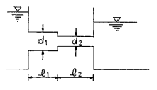
- 118.5
- 121.2
- 134.2
- 142.3
(정답률: 28%)
22. 압력을 일정하게 하고 증기를 계속 가열하면 온도가 포화온도보다 높아지며 체적은 더욱 증가한다. 이와 같이 포화온도 이상으로 가열된 증기를 무엇이라 하는가?
- 습포화 증기
- 과열 증기
- 건포화 증기
- 불포화 증기
(정답률: 59%)
23. 폭 2m의 수로 위에 그림과 같이 높이 3m의 판이 수직으로 설치되어 있다. 유속이 매우 느리고 상류의 수위는 3.5m 하류의 수위는 2.5m 일 때, 물이 판에 작용하는 힘은 약 몇 kN인가?
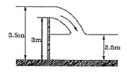
- 26.9
- 56.4
- 76.2
- 96.8
(정답률: 38%)
24. 피스톤-실린더로 구성된 용기 안에 140 kPa, 10℃의 공기(이상기체)가 들어있다. 이 기체가 폴리트로픽 과정(PV1.5=일정)을 거쳐 800 kPa까지 압축되었다. 이때 공기의 온도는 약 몇 ℃인가?
- 158℃
- 287℃
- 233℃
- 506℃
(정답률: 27%)
25. 소방호스의 노즐로부터 유속 4.9m/s로 방사되는 물제트에 피토관의 흡입구를 갖다 대었을 때 피토관의 수직부에 나타나는 수주의 높이는 약 몇 m 인가? (단, 중력가속도는 9.8m/s2이고, 손실은 무시한다.)
- 1.22
- 0.25
- 2.69
- 3.69
(정답률: 53%)
26. 곧은 원관 내 완전난류 유동에 대한 마찰손실수두에 대한 설명으로 틀린 것은?
- 속도의 제곱에 비례한다.
- 관의 길이에 비례한다.
- 관경에 비례한다.
- 마찰계수에 비례한다.
(정답률: 46%)
27. 직경이 D인 원형 축과 슬라이딩 베어링 사이에 (간격=t, 길이=L)에 점성계수가 μ인 유체가 채워져 있다. 축을 ⍵의 각속도로 회전시킬 때 필요한 토크를 구하면? (단, t << D)
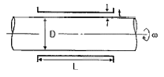
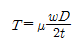
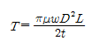
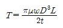
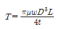
(정답률: 43%)
28. 지름의 비가 1:2인 두 원형 물 제트가 정지한 수직평판의 양쪽에 수직으로 부딪혀서 평형을 이루려면 분출 속도의 비는?
- 1:1
- 2:1
- 4:1
- 8:1
(정답률: 51%)
29. 주사기 통의 단면적이 A이고 바늘의 단면적이 An인 주사기 내에 밀도가 p인 유체를 플런저 속도 V로 밀어주기 위해 가해야 하는 힘을 구하면? (단, 점성효과는 무시하고 준정상 상태로 가정한다.)
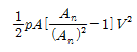
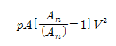
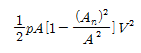
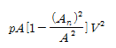
(정답률: 32%)
30. 공기 중에서 무게가 941 N인 돌의 무게가 물 속에서 500 N이면 이 돌의 체적은 몇 m3인가?
- 0.045
- 0.034
- 0.028
- 0.012
(정답률: 45%)
31. 어떤 이상기체의 압력이 10% 낮아지고 온도가 30℃내려갔을 때 밀도 변화가 없다면 초기온도는 몇 ℃인가?
- 27℃
- 57℃
- 227℃
- 270℃
(정답률: 37%)
32. 노즐의 계기압력 400kPa로 방사되는 옥내소화전에서 저수조의 수량이 10m3이라면 저수조의 물이 전부 소비되는데 걸리는 시간은? (단, 노즐의 직경은 10mm이다.)
- 약 75분
- 약 95분
- 약 150분
- 약 180분
(정답률: 50%)
33. 수조바닥보다 5m 높은 곳에서 작동하는 소방펌프의 흡입측에 설치된 진공계가 280mmHg를 가르키고 있다. 이 때 수조내 수면의 높이는 약 몇 m 인가? (단, 흡입관에서의 마찰 손실은 무시한다.)
- 1.2
- 2.8
- 3.2
- 4.0
(정답률: 45%)
34. 동점성계수가 0.6×106m2/s인 유체가 내경 30cm인 파이프 속을 평균유속 3m/s로 흐른다면 유체의 레이놀즈수는 얼마인가?
- 1.5×106
- 2.0×106
- 2.5×106
- 3.0×106
(정답률: 52%)
35. 액체 분자들 사이의 응집력과 고체면에 대한 부착력의 차이에 의하여 관내 액체표면과 자유표면 사이에 높이 차이가 나타나는 것과 가장 관계가 깊은 것은?
- 관성력
- 점성
- 뉴턴의 마찰법칙
- 모세관현상
(정답률: 63%)
36. 열전도도(thermal conductivity)가 가장 낮은 것은?
- 은
- 철
- 물
- 공기
(정답률: 48%)
37. 호주에서 무게가 20 N인 어느 물체를 한국에서 재어보니 19.8 N이었다면 한국에서의 중력가속는 약 몇 m/s2인가? (단, 호주에서의 중력가속도는 9.82m/s2이다.)
- 9.80
- 9.78
- 9.75
- 9.72
(정답률: 62%)
38. 그림의 역 U자관 manometer에서 압력차 Px - Py는 몇 Pa인가?
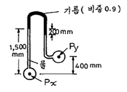
- 2826
- 3215
- 4116
- 5045
(정답률: 48%)
39. 어떤 팬이 1750 rpm으로 회전할 때의 전압은 155 mm Aq, 풍량은 240 m3/min이다. 이것과 상사한 팬을 만들어 1650 rpm, 전압 200mmAq로 작동할 때 풍량은 약 몇 m3/min인가? (단, 비속도는 같다.)
- 356
- 366
- 386
- 396
(정답률: 26%)
40. 다음 식 중에서 연속방정식이 아닌 것은?
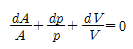
- V×dr=0
- d(pAV)=0
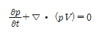
(정답률: 45%)
3과목: 소방관계법규
41. 소방용수시설을 주거지역에 설치하고자 하는 경우 소방대상물과 수평거리는 몇 [m]이하가 되도록 하여야 하는가?
- 50[m]
- 100[m]
- 150[m]
- 200[m]
(정답률: 54%)
42. 건축허가등의 동의 대상물의 범위로 옳지 않은 것은?
- 연면적 400 제곱미터 이상인 건축물
- 항공기 격납고
- 방송용 송ㆍ수신탑
- 지하층 또는 무창층이 있는 건축물로서 바닥면적이 50 제곱미터 이상인 층이 있는 것
(정답률: 43%)
43. 방염처리업자의 지위를 승계한 자는 그 지위를 승계한 날부터 며칠 이내에 관련서류를 시ㆍ도지사에게 제출 하여야 하는가?
- 10일
- 15일
- 30일
- 60일
(정답률: 57%)
44. 제4류 위험물을 저장하는 위험물제조소의 주의사항을 표시한 게시판의 내용으로 접합한 것은?
- 화기엄금
- 물기엄금
- 화기주의
- 물기주의
(정답률: 67%)
45. 소방공사감리를 함에 있어 규정을 위반하여 감리를 하거나 거짓으로 감리한 자에 대한 벌칙은?
- 1년 이하의 징역 또는 1천만원 이하의 벌금
- 1년 이하의 징역 또는 2천만원 이하의 벌금
- 2년 이하의 징역 또는 1천만원 이하의 벌금
- 3년 이하의 징역 또는 3천만원 이하의 벌금
(정답률: 48%)
46. 도시의 건물 밀집지역 등 화재가 발생할 우려가 높거나 화재가 발생하는 경우 그로 인하여 피해가 클 것으로 예상되는 일정한 구역으로서 대통령령이 정하는 지역에 대하여 시ㆍ도지사가 지정하는 것은?
- 화재경계지구
- 화재경계구역
- 방화경계구역
- 재난재해지역
(정답률: 50%)
47. 소방신호의 종류에 속하지 않는 것은?
- 경계신호
- 해제신호
- 경보신호
- 훈련신호
(정답률: 50%)
48. 소방시설 중 화재를 진압하거나 인명구조 활동을 위하여 사용하는 설비로 나열된 것은?
- 상수도소화용수설비, 연결송수관설비
- 연결살수설비, 제연설비
- 연소방지설비, 피난설비
- 무선통신보조설비, 통합감시시설
(정답률: 54%)
49. 연면적 33m3가 되지 않아도 수동식소화기 또는 간이 소화용구를 설치하여야 하는 특정소방대상물은?
- 지정문화재
- 판매시설
- 유흥주점영업소
- 변전실
(정답률: 50%)
50. 지정수량의 몇 배 이상의 위험물을 취급하는 제조소는 관계인이 예방규정을 정하여야 하는가?
- 5배
- 10배
- 100배
- 200배
(정답률: 53%)
51. 면적이나 구조에 관계없이 물분무 등 소화설비를 반드시 설치하여야 하는 특정소방대상물은?
- 통신기기실
- 항공기격납고
- 전산실
- 주차용건축물
(정답률: 63%)
52. 무창층을 정의할 때 사용되는 개구부의 요건과 거리가 먼 것은?
- 개구부의 크기가 지름 50cm 이상의 원이 내접할 수 있을 것
- 해당 층의 바닥면으로부터 개구부 밑부분까지의 높이가 1.2m 이내일 것
- 개구부는 도로 또는 차량이 진입할 수 있는 빈터를 향할 것
- 내부 또는 외부에서 쉽게 파괴 또는 개방할 수 없을 것
(정답률: 66%)
53. 지정수량 미만인 위험물의 저장 또는 취급에 관한 기술상의 기준은 무엇으로 정하는가?
- 위험물제조소 등의 내구로 정한다.
- 행정자치부령으로 정한다.
- 소방방재청의 내규로 정한다.
- 시ㆍ도의 조례로 정한다.
(정답률: 56%)
54. 방염업의 등록기준에 관한 사항으로 시험실의 전용면적은 몇 제곱미터 이상이어야 하는가?(관련 규정 개정전 문제로 여기서는 기존 정답인 1번을 누르면 정답 처리됩니다. 자세한 내용은 해설을 참고하세요.)
- 20제곱미터
- 30제곱미터
- 100제곱미터
- 200제곱미터
(정답률: 50%)
55. 하자보수보증기간이 2년이 아닌 소방시설은?
- 유도등
- 피난기구
- 무선통신보조설비
- 자동식소화기
(정답률: 54%)
56. 형식승인대상 소방용기계ㆍ기구에 속하지 않는 것은?
- 방염제
- 구조대
- 완강기
- 휴대용비상조명등
(정답률: 62%)
57. 의용소방대의 운영과 처우 등에 대한 경비를 부담하여야 하는 자는?(관련 규정 개정전 문제로 기존 정답은 3번 이었습니다. 여기서는 기존 정답 3번을 누르면 정답 처리됩니다. 자세한 내용은 해설을 참고하세요.)
- 소방방재청장
- 의용소방대장
- 임면권자
- 구조대장
(정답률: 58%)
58. 위험물을 취급함에 있어서 정전기가 발생할 우려가 있는 설비는 공기 중의 상대습도를 몇 [%] 이상으로 하는 방법으로 정전기를 유효하게 제거할 수 있는 설비를 설치하여야 하는가?
- 30[%]
- 55[%]
- 70[%]
- 90[%]
(정답률: 62%)
59. 소방기본법령상 화재가 발생한 때 화재의 원인 및 피해등에 대한 조사를 하여야 하는 자는?
- 시ㆍ도지사 또는 소방본부장
- 소방방재청장ㆍ소방본부장 또는 소방서장
- 행정안전부장관ㆍ소방본부장 또는 소방파출소장
- 시ㆍ도지사, 소방서장 또는 소방파출소장
(정답률: 51%)
60. 소방대상물의 방염성능 기준으로 옳지 않은 것은?
- 버너의 불꽃을 제거한 때부터 불꽃을 올리지 아니하고 연소하는 상태가 그칠 때까지 시간은 30초 이내
- 탄화한 면적은 50제곱센티미터 이내, 탄화의 길이는 20센티미터 이내
- 불꽃에 의하여 완전히 녹을 때까지 불꽃의 접촉횟수는 5회 이상
- 버너의 불꽃을 제거한 때부터 불꽃을 올리며 연소하는 상태가 그칠 때까지 시간은 20초 이내
(정답률: 50%)
4과목: 소방기계시설의 구조 및 원리
61. 유압기기를 제외한 전기설비, 케이블실에 이산화탄소 소화설비를 전역방출방식으로 설치할 경우 방호구역의 체적이 600m3이라면 이산화탄소 소화약제 저장량은 몇 kg인가? (단, 이 때 설계농도는 50% 이고, 개구부 면적은 무시한다.)
- 780
- 960
- 1200
- 1620
(정답률: 29%)
62. 소화용수가 지표면으로부터 내부수조바닥까지의 깊이가 몇 m 이상인 지하에 있는 경우에 가압송수장치를 설치해야 하는가?
- 4
- 4.5
- 5
- 5.5
(정답률: 67%)
63. 연결살수설비의 송수구 설치기준에 대한 내용으로 맞는 것은?
- 폐쇄형헤드를 사용하는 설비의 경우에는 송수구ㆍ자동배수밸브ㆍ체크밸브의 순으로 설치할 것
- 폐쇄형헤드를 사용하는 송수구의 호스접결구는 각 송수구역마다 설치할 것
- 개방형 헤드를 사용하는 연결살수설비에 있어서 하나의 송수구역에 설치하는 살수 헤드의 수는 20개 이하가 되도록 할 것
- 송수구는 높이가 0.5m 이하의 위치에 설치할 것
(정답률: 46%)
64. 부속용도로 사용하고 있는 통신기기실의 경우 몇 m2마다 수동식 소화기 1개 이상을 추가로 비치하여야 하는가?
- 30
- 40
- 50
- 60
(정답률: 64%)
65. 화재조기진압용 스프링클러설비의 수원은 화재시 기준압력과 기준수량 및 천장높이 조건에서 몇 분간 방사할 수 있어야 하는가?
- 20
- 30
- 40
- 60
(정답률: 26%)
66. 연결송수관설비의 가압송수장치를 기동하는 방법 및 기동스위치에 대한 설치 기준으로 틀린 것은?
- 가압송수장치는 방수구가 개방될 때 자동으로 기동되거나 수동스위치의 조작에 따라 기동되도록 할 것
- 수동스위치는 2개 이상을 설치하되 그 중 1개는 송수구로부터 5m 이내의 보기 쉬운 장소에 바닥으로부터 높이 0.8m 이상 1.5m 이하로 설치할 것
- 수동스위치는 2개 이상을 설치하되 그 중 1개는 송수구부근에 1.5mm 이상의 강판함에 수납하여 설치할 것
- 가압송수장치의 기동을 표시하는 표시등을 설치할 것
(정답률: 32%)
67. 옥내소화전이 1층에 4개, 2층에 4개, 3층에 2개가 설치된 소방대상물이 있다 옥내소화전 설비를 위해 필요한 최소수원의 수량은?(오류 신고가 접수된 문제입니다. 반드시 정답과 해설을 확인하시기 바랍니다.)
- 2.6m3
- 10.4m3
- 13m3
- 26m3
(정답률: 54%)
68. 제연설비의 설치장소에 따른 제연구역의 구획에 대한 내용 중 틀린 것은?
- 하나의 제연구역의 면적은 1000m2 이내로 할 것
- 하나의 제연구역은 3개 이상 층에 미치지 아니하도록 할 것
- 통로상의 제연구역은 보행중심선의 길이가 60m를 초과하지 아니할 것
- 하나의 제연구역은 직경 60m 원내에 들어갈 수 있을 것
(정답률: 68%)
69. 방호체적 550m3인 전기실에 하론 1301 설비를 할 때 필요한 소화약제의 양(kg)은 최소 얼마 이상으로 하여야 하는가? (단, 가로2m, 세로0.8인 유리창 2개소와 가로 1m, 세로 2m의 자동폐쇄장치가 설치된 방화문이 있다.)(오류 신고가 접수된 문제입니다. 반드시 정답과 해설을 확인하시기 바랍니다.)
- 176.0
- 188.48
- 183.68
- 330.0
(정답률: 30%)
70. 연소방지설비의 설치기준, 구조 등에 관한 설명으로 틀린 것은?
- 송수구로부터 1m 이내에 살수구역 안에 표지를 설치할 것
- 송수구는 구경 65mm의 쌍구형으로 설치할 것
- 지하구 안에 설치된 내화배선, 케이블 등에는 연소방지용 도료를 도포할 것
- 방수헤드는 천장, 또는 벽면에 설치할 것
(정답률: 37%)
71. 아파트에 설치하는 자동식 소화기의 설치기준 중 부적합한 것은?
- 아파트의 각 세대별 주방에 설치한다.
- 소화약제 방출구는 환기구의 청소부분과 분리되어 있어야 한다.
- 자동식 소화기에 사용하는 가스누설 경보 차단장치는 감지부와 1m 이내에 위치한다.
- 자동식 소화기의 탐지부는 수신부와 분리하여 설치하되, 공기보다 무거운 가스 사용시는 바닥에 30cm 이하에 위치한다.)
(정답률: 60%)
72. 폐쇄형스프링클러 헤드를 사용하는 포소화설비 자동기동장치에 대한 설명으로 잘못된 것은?
- 하나의 감지장치 경계구역은 하나의 층이 되도록 할 것
- 표시온도가 79℃ 미만인 것을 사용할 것
- 1개의 스프링클러헤드의 경계 면적은 20m2 이하로 할 것
- 부착면의 높이는 바닥으로부터 3m 이하로 할 것
(정답률: 50%)
73. 물분무소화설비의 화재안전기준에서 차고 또는 주차장에서의 방수량은 바닥면적 1m2에 대하여 매 분당 얼마 이상이어야 하는가?
- 10ℓ
- 20ℓ
- 30ℓ
- 40ℓ
(정답률: 61%)
74. 스프링클러설비의 급수배관 설계를 수리계산으로 할 경우 가지배관의 유속은 ( )m/s, 그 밖의 배관의 유속은 ( )m/s를 초과할 수 없다. 빈 칸에 값을 순서대로 맞게 나타낸 것은?
- 3, 6
- 3, 10
- 6, 10
- 10, 12
(정답률: 55%)
75. 층수가 10층인 일반창고에 습식의 폐쇄형 스프링클러 헤드가 설치되어 있다면 이 설비에 필요한 수원의 양은 얼마 이상이어야 하는가? (단, 이 창고는 특수가연물을 저장ㆍ취급하지 않는 일반물품을 적용한다.)
- 16m3
- 24m3
- 32m3
- 48m3
(정답률: 32%)
76. 제연설비의 배출기와 배출풍도에 관한 설명 중 틀린 것은?
- 배출기와 배출 풍도의 접속부분에 사용하는 캔버스는 내열성이 있는 것으로 할 것
- 배출기의 전동기부분과 배풍기 부분은 분리하여 설치할 것
- 배출기 흡입측 풍도안의 풍속은 15m/s 이상으로 할 것
- 배출기의 배출측 풍도안의 풍속은 20m/s 이하로 할 것
(정답률: 47%)
77. 연결살수설비의 설치 대상이 아닌 것은?
- 판매시설 용도 건물로 바닥면적의 합계가 700m2인 것
- 백화점 용도 건물의 지하층으로서 바닥면적의 합계가 700m2인 것
- 학교용도 건물의 지하층으로서 700m2 인 것
- 탱크의 용량이 40톤인 지상 노출 가스탱크 시설
(정답률: 30%)
78. 스프링클러헤드의 방수구에서 유출되는 물을 세분시키는 작용을 하는 것은?
- 클래퍼
- 워터모터공
- 리타딩챔버
- 디프렉타
(정답률: 67%)
79. 숙박시설ㆍ노유자시설 및 의료시설로 사용되는 층에 있어서의 피난기구는 그 층의 바닥면적이 몇 m2 마다 1개 이상을 설치하여야 하는가?
- 300
- 500
- 800
- 1000
(정답률: 51%)
80. 방수구가 각 층에 2개씩 설치된 소방대상물에 연결송수관 가압송수장치를 설치하려 한다. 가압송수장치의 설치대상과 최상층 말단의 노즐에서 요구되는 최소 방사압력, 토출량이 적합한 것은?
- 설치대상 : 높이 60m 이상인 소방대상물, 방사압력 0.25 MPa 이상, 토출량 2200ℓ/min 이상
- 설치대상 : 높이 70m 이상인 소방대상물, 방사압력 0.25 MPa 이상, 토출량 2200ℓ/min 이상
- 설치대상 : 높이 60m 이상인 소방대상물, 방사압력 0.35 MPa 이상, 토출량 2400ℓ/min 이상
- 설치대상 : 높이 70m 이상인 소방대상물, 방사압력 0.35 MPa 이상, 토출량 2400ℓ/min 이상
(정답률: 31%)